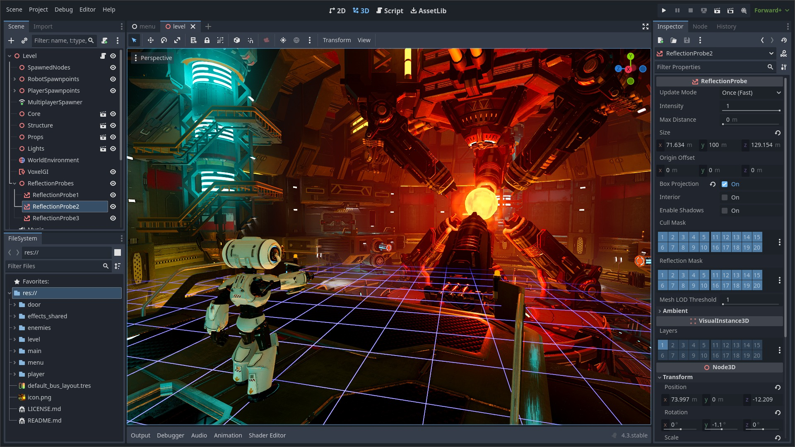

Retour au menu principal
En ce moment, je travaille sur plusieurs projets différents, que ce soit dans mon cadre scolaire ou dans un cadre personnel.

Voici à quoi ressemble le logiciel en soi. Il est open-source, gratuit, et rapide à prendre en main.
J'exprime mes intérêts à l'aide des jeux vidéo que je développe à l'aide de logiciels comme Godot. J'ai commencé à utiliser ce programme
depuis un moment tout en apprennant comment l'utiliser, ainsi que son langage de programmation nommé GDScript. J'apprécie beaucoup
le procédé pour mettre en place un logiciel de mes propres mains, et c'est la même raison pourquoi je m'intéresse au développement
d'applications auquel j'aurai accès dans l'option SLAM (Solutions Logicielles et Applications Métiers) du lycée dans lequel je suis.
Dans cette filière, je pourrai apprendre le langage PHP, JavaScript, et surtout comment utiliser des outils comme GitHub.